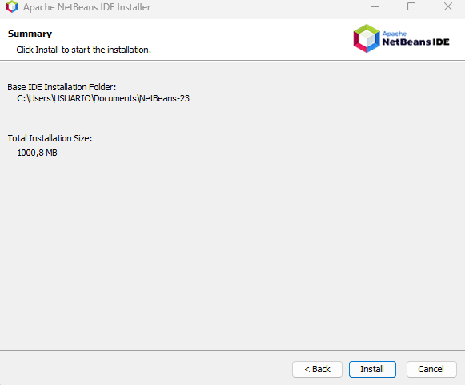

Antes de proceder a al tutorial de la instalación del programa es necesario saber un poco de su historia. En Abril del 2015 Microsoft lanzó Visual Studio Code como un editor de código abierto, es decir, OpenSource. Bajo la licencia MIT. La historia de VSC inició con la idea de Microsoft de ofrecer a la comunidad de aquellos programadores y desarrolladores que no necesitaban toda la complejidad de un entorno de desarrollo, sin embargo, Microsoft ya había desarrollado un IDE como Visual Studio que es un IDE bastante completo principalmente para el desarrollo de aplicaciones, pero Visual Studio es más complejo y pesado, cosa que Microsoft no quería para Visual Studio Code, sino que este fuese una herramienta ligera para proyectos pequeños.
Instalación de VSCode
1- Principalmente debes ir a la página oficial de Visual Studio Code: https://code.visualstudio.com/ y hacer clic en "Download for Windows".

Y se procederá a descargar el archivo de instalación.
2- Una vez descargado el archivo hacemos doble clic en el archivo para comenzar la instalación.
3- Después de que termine la instalación, haz clic en "Finalizar" para completar el proceso.

4- Ya con esto se abrirá el Visual Studio Code y si no simplemente puedes buscar el acceso directo.
5- En cuanto a la configuración, puedes cambiar el idioma, instalar extensiones para diferentes lenguajes de programación y personalizar el entorno.

Como añadir y eliminar módulos
Para añadir módulos a Visual Studio Code es un proceso bastante sencillo ya que solo es ir a la barra lateral de opciones de Netbeans, seleccionar el cuadrito numero cuatro contando de arriba hacia abajo y buscar el módulo o extensión que querramos añadir.

En cuanto a la eliminación de estos, solo debemos dar clic derecho sobre el módulo o extensión que querramos eliminar y le daremos a "uninstall"
Como personalizar y Automatizar Visual Studio Code
Para personalizar la interfaz de VSCode solo debemos darle al ctrl + shift + p que resulta en una ventana emergente donde debemos escribir: Color Theme para cambiar la interfaz y el color de nuestro entorno.

Y selecciona el que mas se adapte a ti o el que mas te guste

Para automatizar, sería lo mismo que añadir los Plugins o las extensiones para usar VSCode ya que el no funciona sin estas requeridas extensiones, una vez hayas instalado las extensiones que mas se adaptan a tus necesidades ya estaría personalizado y automatizado por completo el VSCode.
Como configurar el sistema de actualizaciones
Visual Studio Code tiene un sistema de actualización automática que lo mantiene actualizado sin intervención manual, pero se pueden configurar las actualizaciones a preferencia de cada quien.
Primero ve a file y selecciona las preferencias, posterior a eso a las configuraciones
Una vez ahí buscamos "update" y puedes habilitar la opción de actualización automática o manual.
Ya con esto tendríamos arreglada la actualización.
Características
Características Comunes
- Ejecutar en modo depuración.
- Analizar la consistencia y calidad del código fuente.
- Ejecución automática de pruebas.
Características Específicas
- Ligero y rápido: Ideal para proyectos pequeños y rápidos, con un bajo consumo de recursos.
- Amplia personalización con extensiones: Permite personalizar el editor para adaptarlo a casi cualquier flujo de trabajo.
- Soporte para múltiples lenguajes y tecnologías: Compatible con varios lenguajes como Python, JavaScript, Java, C++, entre otros.
Ventajas de VSCode
1- Ligereza y rapidez: VSCode es un editor de código liviano y rápido, ideal para proyectos pequeños y medianos. A diferencia de otros IDEs más pesados, como IntelliJ IDEA o Eclipse, VSCode se carga rápidamente y tiene un impacto menor en el rendimiento del sistema, incluso en máquinas con menos recursos.
2- Amplia personalización con extensiones: Una de las mayores fortalezas de VSCode es su extensa galería de extensiones disponibles. Esto permite personalizar el editor para adaptarlo a casi cualquier flujo de trabajo o lenguaje de programación, desde Python hasta C++, pasando por JavaScript, y mucho más.
3- Soporte para múltiples lenguajes y tecnologías: VSCode no es un IDE específico de un lenguaje, lo que significa que puedes usarlo para programar en Python, JavaScript, HTML/CSS, Java, C#, PHP, Ruby, entre muchos otros. Gracias a sus extensiones y su soporte integrado para Git, Docker, y desarrollo remoto, es una excelente opción tanto para desarrolladores web como de software en general.
Inconvenientes de VSCode
1- Falta de características avanzadas de un IDE completo: Aunque VSCode es muy versátil, carece de algunas características avanzadas que se encuentran en IDEs completos, como IntelliJ IDEA o Eclipse. Por ejemplo, no tiene soporte nativo para herramientas complejas de modelado, gestión de bases de datos o depuración avanzada, lo que puede ser un inconveniente para desarrolladores que necesitan estas herramientas integradas de forma predeterminada en su flujo de trabajo.
2- Dependencia de extensiones: Mientras que la gran cantidad de extensiones es una ventaja, también puede ser una desventaja. La experiencia del usuario puede variar según las extensiones instaladas, y algunas de ellas no están siempre bien mantenidas o actualizadas. Además, muchas funciones avanzadas que en otros IDEs vienen de serie, en VSCode requieren instalación manual de extensiones, lo que puede ser una barrera para algunos usuarios menos experimentados.
3- Problemas de rendimiento con proyectos grandes: Aunque VSCode es ligero en comparación con otros IDEs, puede experimentar problemas de rendimiento en proyectos extremadamente grandes o complejos, especialmente si se manejan archivos grandes o hay demasiadas extensiones activas. El editor puede volverse más lento al manejar grandes bases de código, lo que afecta la productividad en ciertos escenarios.
Netbeans

Antes de empezar con el tutorial, es útil conocer un poco sobre NetBeans. Este es un IDE de código abierto que nació en 1996 de la mano de la empresa checa XDevelop. En 2000, Sun Microsystems lo compró y lo convirtió en uno de los IDEs más importantes para Java. Después, cuando Oracle adquirió Sun en 2010, NetBeans continuó dentro de su ecosistema. En 2016, Oracle decidió donar el proyecto a la Apache Software Foundation (ASF), donde sigue siendo un proyecto de código abierto y gestionado por la comunidad. Hoy, NetBeans sigue siendo una opción popular para desarrollar en Java, pero también soporta lenguajes como PHP, C++ y HTML5, y es mantenido activamente por Apache.
Instalación de NetBeans
Pero recuerda para que Netbeans funcione, debes tener el jdk previamente instalado y el IDE lo detectará automáticamente, pero si es que no, puedes ir a la página de oracle y buscaremos el jdk de java para Windows en este caso
Con el JDK instalado ya podríamos proceder de lleno a la instalación del Netbeans.
1- Ve al sitio oficial de Netbeans y selecciona download for Windows:
https://netbeans.apache.org/download/index.html2- Descarga el archivo .exe para Windows
3- Selecciona el primer link para proceder a la descarga.
Y se procederá a la descarga.
4- Una vez descargado, ejecuta el archivo y sigue las instrucciones del asistente de instalación.
Y le darás al install para que se instale.
5- Una vez finalizada la instalación, dale al "Finalizar" para que se finalice el proceso.
6- Se deberá crear un acceso directo y puedes acceder a Netbeans desde allí.
7- Ya con estos pasos, si es que los has seguido correctamente el Netbeans te debría correr adecuanamente.
Como añadir y eliminar modulos
Para añadir plugins, debes ir a Tool y a los Plugins

Y buscar el plugin que quieras para instalarlo.
Para eliminarlos, solo debes desinstalar el plugin y ya está.
Como personalizar y automatizar Netbeans
Para personalizar Netbeans, ve a la ventana de Tool y selecciona el apartado de Options.
Una vez ahí ve a la Appearance y en el apartado de Look and Feel, escoge el tema que mas te guste. No olvides aplicarlo para que se guarde.
En cuanto a la automatización, dbes saber que Netbeans es compatible con Maven y Gradle así que puedes buscar un plugin de este.
Como configurar el sistema de actualizaciones
Ve al apartado de Help y haz clic en Check for Updates
Una vez ahí puedes ver que actualizaciones están disponibles para actualizarlas.
Características
Características Comunes
- Ejecutar en modo depuración.
- Analizar la consistencia y calidad del código fuente.
- Ejecución automática de pruebas.
Características Específicas
- Ligero y rápido: Ideal para proyectos pequeños y rápidos, con un bajo consumo de recursos.
- Amplia personalización con extensiones: Permite personalizar el editor para adaptarlo a casi cualquier flujo de trabajo.
- Soporte para múltiples lenguajes y tecnologías: Compatible con varios lenguajes como Python, JavaScript, Java, C++, entre otros.
Ventajas de Netbeans
1- IDE completo y robusto: NetBeans ofrece un entorno de desarrollo completamente integrado, con funcionalidades completas que incluyen depuración, integración con bases de datos, gestión de versiones (Git), GUI builder (para aplicaciones con interfaz gráfica), y herramientas para el desarrollo de aplicaciones móviles. A diferencia de editores como VSCode, muchas de estas características están listas para usarse desde el inicio, sin necesidad de instalar extensiones.
2- Soporte nativo para Java: NetBeans está especialmente optimizado para Java. Ofrece una integración excelente con JDK (Java Development Kit) y herramientas como Maven y Gradle. La creación de proyectos en Java SE, Java EE y JavaFX es fácil y eficiente. Además, cuenta con un Java GUI Builder que facilita la creación de interfaces gráficas, lo que lo convierte en una opción popular para desarrolladores de aplicaciones de escritorio en Java.
3- Desarrollo multiplataforma: NetBeans es completamente multiplataforma, funcionando de manera nativa en Windows, Linux y macOS. Esto permite que los desarrolladores trabajen en diferentes sistemas operativos sin tener que cambiar de herramientas o IDE. La portabilidad y la integración con Java hacen que NetBeans sea una opción atractiva para aplicaciones multiplataforma.
Inconvenientes de Netbeans
1- Rendimiento un poco lento: A pesar de ser un IDE completo, NetBeans puede ser relativamente lento, especialmente al iniciar o al trabajar con proyectos grandes. Aunque ha mejorado en cuanto a rendimiento en versiones recientes, sigue siendo más pesado en comparación con editores ligeros como Visual Studio Code. Esto puede resultar en tiempos de arranque más largos y un uso más intensivo de recursos, lo que no es ideal en equipos con hardware limitado.
2- Interfaz menos moderna: Aunque NetBeans ofrece una interfaz gráfica funcional, muchos usuarios consideran que su diseño es más anticuado comparado con otros IDEs como IntelliJ IDEA o Eclipse. La interfaz de usuario no es tan pulida ni tan intuitiva como la de otros IDEs más modernos, lo que puede hacer que la experiencia de desarrollo no sea tan atractiva para nuevos usuarios.
3- Menor soporte para lenguajes fuera de Java: Aunque NetBeans soporta varios lenguajes como PHP, C++ y JavaScript, su soporte para otros lenguajes no es tan robusto como en otros IDEs especializados. Por ejemplo, IntelliJ IDEA tiene un soporte más avanzado para lenguajes como Kotlin, Scala o Ruby. Para proyectos fuera del ecosistema Java, es posible que NetBeans no ofrezca el mismo nivel de soporte, herramientas y extensiones que otros IDEs.
IntelliJ IDEA

IntelliJ IDEA es otro popular IDE, desarrollado por JetBrains. Es ampliamente utilizado en la comunidad Java y está basado en la plataforma IntelliJ. Además de su soporte excepcional para Java, IntelliJ IDEA es compatible con muchos otros lenguajes como Kotlin, Groovy, Scala, entre otros.
Instalación de IntelliJ IDEA
1- Como primer paso para instalar IntelliJ IDEA en Windows, visita la página oficial de JetBrains e instala el archivo
https://www.jetbrains.com/idea/
2- Cuando hayas hecho click en download, escogerás la versión para Windows

Y la instalación del archivo se iniciará.
3- Posterior a eso cuando ya se haya instalado el arcivo, lo abriremos para iniciar con la descarga del IDE.
4- Acepta todo lo que te pida y selecciona la ruta en la que quieres que se instale el IDE

5-Una vez hecho esto, le darás al install para instalarlo.

Con esto se inicará la instalación.

6- Una vez finalizado, le darás al Finish para terminar la instalación.

7- Ya hecho esto, puedes probar Intellij con un proyecto de prueba
Como añadir y eliminar modulos
Para añadir modulos o plugins a Intelliij IDEA, ve a la ruedita con configuraciones en la esquina
Y selecciona la opción que dice "Plugins"
Una vez ahí podrá ver el marketplace que es donde se encuentran los plugins que desees intalar.
Para intalarlo solo basta con hacer clic encima de ellos y darle al "Install" para que automaticamente inicie la instalación
Para eliminarlos, solo basta con ir a los instalados y hacer clic sobre ellos para eliminarlos.
Y aceptar la desinstalación.
Como personalizar y automatizar Intellij IDEA
Para personalizar Intellij IDEA, debes ir a las configuraciones y buscar la apariencia. Una vez ahí puedes personalizar el entorno como te guste, solo le das a ok y aplicar cambiio para que se guarden.
En cuanto a la automatización de Intellij IDEA, solo debes buscar e instalar el plugin de Maven o Gradle.
Como configurar el sistema de actualización.
Para configurar el sistema de actualizaciones, debes ir a File y a los Settings o configuraciones de Intellij
Una vez ahí, busca en Appearance & Behavior los ajustes del sitema o System Settings y Updates. Con esto ya podras configurar cada cuanto quieres que se actualice el intellij o si quieres que sea de manera manual que se lleve a cabo la actualización.
Características
Características Comunes
- Ejecutar en modo depuración.
- Analizar la consistencia y calidad del código fuente.
- Ejecución automática de pruebas.
Características Específicas
- Desarrollo Android es basado en Android Studio, ideal para crear aplicaciones móviles Android.
- Herramientas de refactorización avanzada refactoriza el código de manera segura, como renombrar clases, funciones, etc.
- Soporte nativo para Java y Kotlin, autocompletado y herramientas avanzadas para estos lenguajes.
Ventajas de Intellij IDEA
1- Soporte completo para Java y otros lenguajes: IntelliJ IDEA es conocido por su soporte excepcional para Java y otros lenguajes populares como Kotlin, Scala, Groovy, JavaScript, TypeScript, Python (con plugins), PHP, y más. La integración con Maven, Gradle y otros gestores de dependencias es muy fluida. Además, la compatibilidad con Spring Boot, Hibernate, y JavaFX hace que sea una herramienta ideal para desarrolladores Java, tanto en aplicaciones de escritorio como en desarrollo web o back-end.
2- Funcionalidades avanzadas de refactorización y autocompletado: Funcionalidades avanzadas de refactorización y autocompletado: IntelliJ IDEA se destaca por su impresionante capacidad de autocompletado de código, refactorización y análisis de código estático. Estas características mejoran significativamente la productividad del desarrollador. La refactorización es particularmente robusta, permitiendo cambios en el código con mínima probabilidad de introducir errores. Las sugerencias inteligentes y la corrección automática de errores hacen que el flujo de trabajo sea muy eficiente.
3- Excelente soporte para desarrollo multiplataforma: IntelliJ IDEA no solo es perfecto para aplicaciones Java, sino que también soporta una amplia gama de tecnologías y plataformas modernas. Puedes desarrollar aplicaciones para Android, microservicios, aplicaciones web con React, Vue.js, y Angular, además de trabajar con lenguajes como Python, Go, Ruby, y muchos más. La integración con Docker, Kubernetes, Git, y otros sistemas de control de versiones está perfectamente implementada.
Inconvenientes de Intellij IDEA
1- Uso intensivo de recursos: Una de las principales críticas a IntelliJ IDEA es que es un IDE pesado en comparación con otros más ligeros como Visual Studio Code. Requiere una cantidad considerable de memoria RAM y procesador para funcionar de manera eficiente, especialmente cuando se trabaja con proyectos grandes. Esto puede hacer que el rendimiento del IDE sea lento en máquinas con especificaciones más bajas, lo que puede ser un inconveniente para desarrolladores que no tienen hardware potente.
2- Curva de aprendizaje: Aunque IntelliJ IDEA ofrece una gran cantidad de funcionalidades avanzadas, la curva de aprendizaje puede ser algo pronunciada para los nuevos usuarios. La interfaz y las opciones avanzadas pueden ser abrumadoras para quienes están comenzando a usar el IDE. También, algunas funciones están muy escondidas o requieren una configuración inicial, lo que puede generar cierta frustración si no se conoce bien el entorno.
3- Costo (para la versión completa): IntelliJ IDEA ofrece dos versiones: Community Edition (gratuita) y Ultimate Edition (de pago). La Ultimate Edition tiene más características avanzadas, especialmente para el desarrollo en web y enterprise (por ejemplo, soporte para Spring, Java EE, JPA, y herramientas de base de datos). Sin embargo, la versión Ultimate tiene un costo de licencia anual, lo que puede ser una barrera para estudiantes, desarrolladores independientes o equipos con presupuestos limitados.